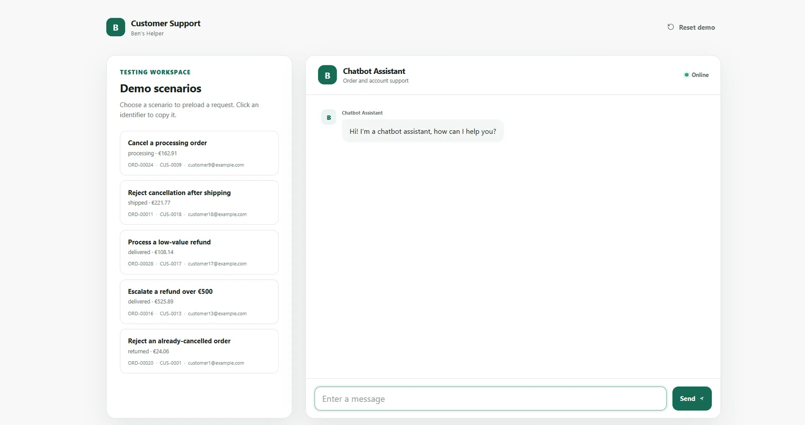

← All work
Customer Support Agent
An LLM-powered support backend that can act on orders safely. The agent works through typed tools, refund rules stay in code, and risky requests go to a human.
- Role
- Backend developer
- Team
- Solo
- Status
- Live
- Links
- Live demo ↗ · Code ↗

Problem
- A support assistant that only talks is of limited use; one that can act on orders is useful but risky. The goal was letting it act while keeping every action safe.
- Answers about returns, shipping and refunds have to come from the shop's actual policy, not from the model's general idea of how retail works.
What I built
- FastAPI backend holding the conversation loop: the model receives the user's message plus retrieved policy passages and chooses between answering and calling a tool.
- Order data in SQLite behind a small set of typed tools (look up an order, check eligibility, cancel, refund) rather than free database access.
- Policy answers grounded with RAG over a ChromaDB collection of the shop's policy documents.
- Identity check before any order-specific action, and an escalation path that hands the conversation to a human with its context attached. Packaged with Docker.
Key decisions
- Typed tools instead of a general SQL tool: the agent can only do what the API already allows.
- Refund limits and eligibility rules live in code, not in the prompt, so the model can't talk its way past them.
- Escalate when retrieval confidence is low or a rule blocks the action, instead of letting the model improvise a policy.
Stack
- Python
- FastAPI
- OpenAI API
- Tool calling
- RAG
- ChromaDB
- SQLite
- Docker